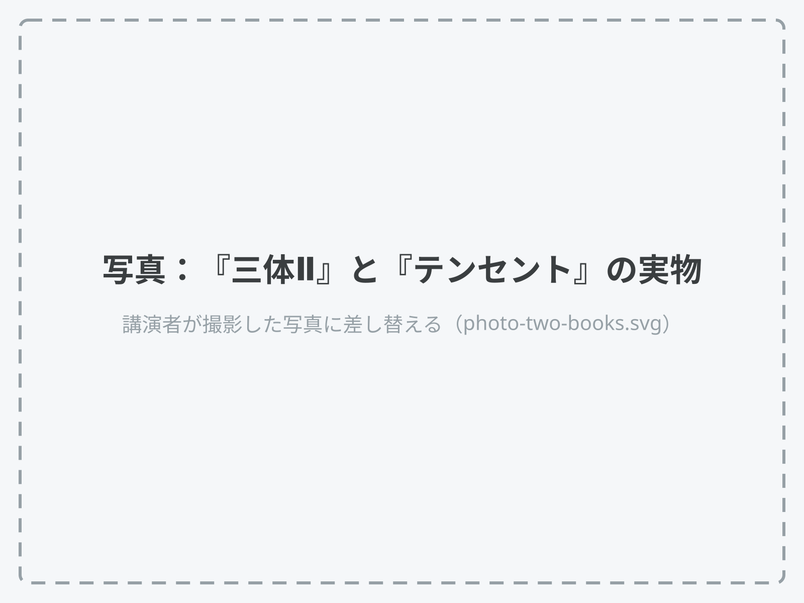

黒暗森林と
競馬場
2010年11月、テンセントが選んだ戦略
今日話したいこと
『三体』は、中国ビジネス界の『キングダム』
『キングダム』で学ぶ
- 戦略
- リーダーシップ
『三体』で学ぶ
- 競争のルール
- 生き残り方
中国では「黒暗森林」「降維打撃（次元を落として叩く）」が、ビジネスの言葉として使われている。
「この10年で一番人に薦めた本。読めばインターネットの戦略がわかる」雷軍（シャオミ創業者）、2018年、講演者訳
テンセントは競争をやめなかった。
戦う場所を、顧客の前から
社内へ移した。
QQの会社が、QQを食う製品を自分で作った。
入口は『三体』、舞台は2010年11月。
紹介する本
『三体』三部作
劉慈欣
日本では三部作で累計100万部超。
2024年にNetflixでドラマ化。
中国版ドラマ（2023）は
テンセント系の制作。Netflix版とは別。
第2部の考え方に触れます。第3部の展開には触れません。

中国にいた頃と、日本に来てから
中国にいた頃
- （初めて読んだ歳と、きっかけ）
- （まわりでどう使われていたか）
日本に来てから
- （話が通じた相手）
- （意外だった反応）
講演者が記入：（ ）を具体的な実体験に置き換える
UI/UXデザイナー
話せない本にしよう
講演者が確認：自分の言葉に直す
見つかったら撃たれる。
だから先に撃つ。
本を読んで
正直、『三体』を読んでも
戦略はわからない。
経営者の"三体語録"も、原作とは違う言葉が多かった。
黒暗森林の前提は、商売に当てはまらない
黒暗森林
- 一回きり
- 隠れれば生き残る
商売
- 何度も続く
- 評判は全部見られる
これは、営業が一番よく知っている。
中国の経営者って、
『三体』に何を見てたんだろう？
私（◯歳）
（相手の一言を、そのまま）
（中国ITに詳しい◯◯さん、◯歳）
講演者が記入。見つからなければ『三体Ⅱ』の面壁計画（4人に別々の作戦を立てさせた）で代える
ムダに見える重複が、
「技術爆発」への保険になる。
「資源が許すなら、同じ製品を複数のチームが同時に開発してもいい。
戦略上どうしても必要ならば」
馬化騰（ポニー・マー）、2012年、講演者訳。中国IT業界ではこれを「賽馬（サイマー）」、つまり競馬と呼ぶ。
2010年11月に戻る
26卒の多くは小学1年生。
Goodpatch創業の10か月前。
この1か月を、5つの日付で見ていく
QQ：当時の中国版LINE ／ 360：セキュリティソフト大手
出典：呉暁波『テンセント』（プレジデント社）第13〜15章。会社公認の伝記で、会社側の視点で書かれている。
QQが、利用者に「QQか360か」を迫った
9月から続いた"猜疑の連鎖"の、最大の一発。
最強より、最も尊敬される会社へ
馬化騰から全社員への手紙。猜疑の連鎖を、自分から断ちにいった。
後半は講演者の読み
外で叱られた頃、中でWeChatが始まった
日付が近いのは偶然。WeChatは張小龍（アレン・チャン）のメールから始まった。
10人足らずのチームが、約2か月で公開した。
一流の営業ほど、「うちか他社か」を迫らない
両社が謝罪。のちに裁判には勝つが、世論にはこの時もう負けていた。
『テンセント』第13章の総括。判決は2013〜14年。
森の撃ち合いをやめ、社内に競馬場をつくった
同じ月、中国で『三体Ⅲ』が出版された。この重なりは界面新聞（2020年）の指摘。
「もしWeChatが他社から出ていたら、
我々はおそらく
止められなかった」
馬化騰、2013年、講演者訳
そのWeChatは、
いまや生活インフラ
月に14億人が使う。
連絡も、支払いも、
ちょっとした手続きも。
講演者が記入：私のWeChat（例：家族との連絡）
利用者数：テンセント決算（2025年12月末、WeixinとWeChatの合計）

営業では御法度の
「同じ客を二人で追う」を、
開発ではあえてやった。
決めるのは、審査員か、ユーザーか
よくある日本企業
- 外：競争
- 中：審査員が1案に絞る
2010年以降のテンセント
- 外：オープン化を宣言
- 中：競わせて、ユーザーが選ぶ
「いくつものチームが同時に開発し、最後はWeChatがより多くのユーザーに選ばれた。これを資源のムダと言えるだろうか」
馬化騰、2012年、講演者訳
オープン化は、
道半ばだった。
のちに他社リンクを遮る「壁」も築かれ、
2021年9月の行政指導で各社が段階的に解除した。
同じ血統の馬を何頭走らせても、
競技が変われば勝てない。
ショート動画アプリを十数本出したと報じられるが、
どれも「友達経由で広がる」同じ血統だった。
アルゴリズム推薦の抖音（中国版TikTok）は、
テンセントにとっての「技術爆発」だった。
まとめ
2冊を、
誰にどう薦めるか
26卒へ：まずはNetflixのドラマから。
忙しい社長へ：『三体Ⅱ 黒暗森林』と、
『テンセント』の第13〜15章だけで。
『テンセント』は会社公認の伝記（会社側の視点）。

いまは、AIで毎月のように
技術爆発が起きる。
そして重複は、AIで安くなった。
今期、1案件で社内競馬を試させてください
| 対象 | （営業と決めた案件名を入れる）。クライアントの合意をとる |
| 規模 | Discovery期・2チーム（各1人）×2週間、計約20人日 |
| 前提 | 血統を変える（例：AI先行 vs 調査先行）。普段の2案と違い、前提から変える |
| 判定 | ユーザーテスト（タスク完了率・どちらを選んだか）。負けた側はすぐ止め、責めない |
| お願い | 20人日を社内投資として承認してほしい |
営業にとっては、ユーザーが選んだ1案を、そのまま顧客に持っていける。
質疑応答用
本編では使わない。質問が出たときだけ開く。
重複は「保険料」。
小さく、短くすれば安い。
WeChatの最初の版は、10人足らずのチームが約2か月で作った。
ルールは4つ。
同じゴール、期限つき、
ユーザーが審判、負けても責めない。
受託ではDiscovery期に小さく。
自社プロダクトと新規事業なら、
丸ごと競馬にできる。
作品の概念と、
テンセントの経営判断だけを扱います。
作家や企業の政治的評価はしません。
10/100/1000法則
プロダクトマネージャーは毎月、10人にユーザー調査をし、
100本のユーザーブログを読み、1000件の体験フィードバックを集める。
馬化騰、2012年の公開書簡（灰度法則の七つの次元）より、講演者訳